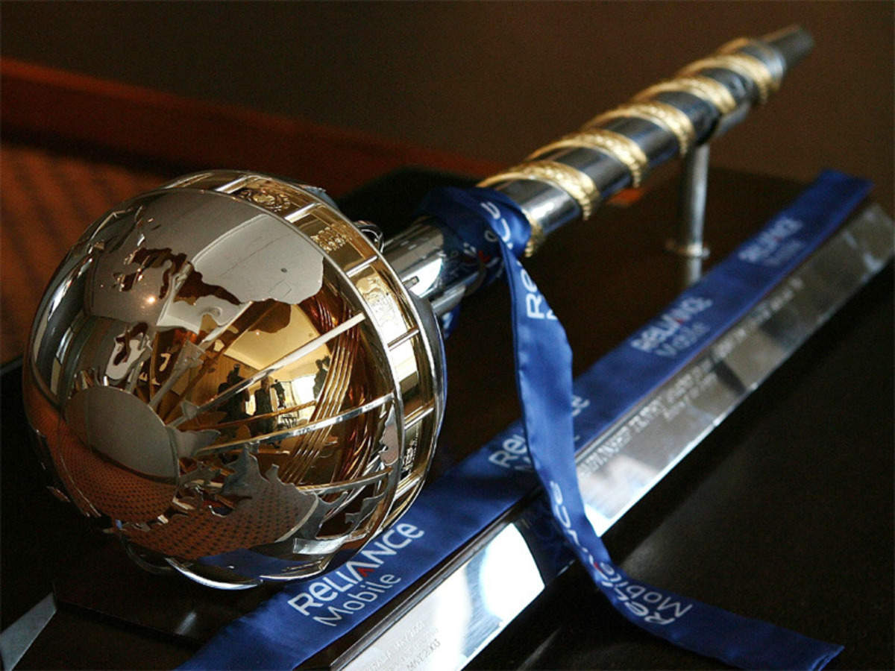

Cricket
The second most popular sport in world.
Introduction
Cricket is a bat-and-ball game played between two teams of eleven players on a field at the centre of which is a 22-yard (20-metre) pitch with a wicket at each end, each comprising two bails balanced on three stumps. The batting side scores runs by striking the ball bowled at the wicket with the bat (and running between the wickets), while the bowling and fielding side tries to prevent this (by preventing the ball from leaving the field, and getting the ball to either wicket) and dismiss each batter (so they are "out"). Means of dismissal include being bowled, when the ball hits the stumps and dislodges the bails, and by the fielding side either catching the ball after it is hit by the bat and before it hits the ground, or hitting a wicket with the ball before a batter can cross the crease in front of the wicket. When ten batters have been dismissed, the innings ends and the teams swap roles. The game is adjudicated by two umpires, aided by a third umpire and match referee in international matches.
International Cricket Council
![]()
The International Cricket Council (ICC) is the world governing body of cricket. It was founded as the Imperial Cricket Conference in 1909 by representatives from Australia, England and South Africa. It was renamed as the International Cricket Conference in 1965, and took up its current name in 1987. The ICC has its headquarters in Dubai, UAE. The ICC has 104 member nations currently: 12 Full Members that play Test matches, and 92 Associate Members. The ICC is responsible for the organisation and governance of cricket's major international tournaments, most notably the Cricket World Cup and the T20 World Cup. It also appoints the umpires and referees that officiate at all sanctioned Test matches, One Day Internationals and Twenty20 Internationals. It promulgates the ICC Code of Conduct, which sets professional standards of discipline for international cricket and also co-ordinates action against corruption and match-fixing through its Anti-Corruption and Security Unit (ACSU).
Important members of ICC
Abe Bailey
Founder of ICC
Greg Braceley
CEO of icc
Cricket Tournaments
-
International Cricket World Cup

The Cricket World Cup (officially known as ICC Men's Cricket World Cup)[2] is the international championship of One Day International (ODI) cricket. The event is organised by the sport's governing body, the International Cricket Council (ICC), every four years, with preliminary qualification rounds leading up to a finals tournament. The tournament is one of the world's most viewed sporting events and is considered the "flagship event of the international cricket calendar" by the ICC. The first World Cup was organised in England in June 1975, with the first ODI cricket match having been played only four years earlier. However, a separate Women's Cricket World Cup had been held two years before the first men's tournament, and a tournament involving multiple international teams had been held as early as 1912, when a triangular tournament of Test matches was played between Australia, England and South Africa. The first three World Cups were held in England. From the 1987 tournament onwards, hosting has been shared between countries under an unofficial rotation system, with fourteen ICC members having hosted at least one match in the tournament.
-
Internationl T20 WOrld Cup
The ICC Men's T20 World Cup (earlier known as ICC World Twenty20)is the international championship of Twenty20 International cricket. Organised by cricket's governing body, the International Cricket Council (ICC), the tournament currently consists of 16 teams, comprising the top ten teams from the rankings at the given deadline and six other teams chosen through the T20 World Cup Qualifier. All matches are played as Twenty20 Internationals. The event has generally been held every two years. However, the next edition of the tournament was scheduled to take place in 2020 in Australia, but due to COVID-19, the tournament has been postponed to 2021, with the host changed to India, five years after the conclusion of the 2016 edition. However, due to the COVID-19 pandemic in India, the matches were relocated to the United Arab Emirates and Oman. In May 2016, the ICC put forward the idea of having a tournament in 2018, with South Africa being the possible host. But at the conclusion of the 2017 ICC Champions Trophy, the ICC dropped the idea of 2018 edition.
International test Worldcup
The ICC World Test Championship is a league competition for Test cricket run by the International Cricket Council (ICC), which started on 1 August 2019.[1][2] It is intended to be the premier championship for Test cricket. It is in line with the ICC's goal of having one pinnacle tournament for each of the three formats of international cricket.[3] The original plans to hold the competition in 2013, replacing the 2013 ICC Champions Trophy, were abandoned. It was rescheduled for June 2017, with a second Test championship to take place in India in Feb-March 2021. The top four ranked teams on 31 December 2016 – the cut-off date set by the ICC – would play the three-match Test championship. There would have been two semi-finals and the winners play the final. However, in January 2014 the ICC World Test Championship was cancelled and the 2017 ICC Champions Trophy was reinstated
Cricket Grounds
-
Lords Cricket Ground

The Cricket World Cup (officially known as ICC Men's Cricket World Cup)[2] is the international championship of One Day International (ODI) cricket. The event is organised by the sport's governing body, the International Cricket Council (ICC), every four years, with preliminary qualification rounds leading up to a finals tournament. The tournament is one of the world's most viewed sporting events and is considered the "flagship event of the international cricket calendar" by the ICC. Lord's Cricket Ground, commonly known as Lord's, is a cricket venue in St John's Wood, London. Named after its founder, Thomas Lord, it is owned by Marylebone Cricket Club (MCC) and is the home of Middlesex County Cricket Club, the England and Wales Cricket Board (ECB), the European Cricket Council (ECC) and, until August 2005, the International Cricket Council (ICC). Lord's is widely referred to as the Home of Cricket and is home to the world's oldest sporting museum.
-
Melbourne Cricket Ground

The Melbourne Cricket Ground (MCG), also known locally as "The G",[4] is an Australian sports stadium located in Yarra Park, Melbourne, Victoria. Founded and managed by the Melbourne Cricket Club, it is the largest stadium in the Southern Hemisphere, the 11th largest globally, and the second largest cricket ground by capacity. The MCG is within walking distance of the city centre and is served by Richmond and Jolimont railway stations, as well as the route 70 tram. It is adjacent to Melbourne Park and is part of the Melbourne Sports and Entertainment Precinct.
Montera Cricket Ground

The Narendra Modi Stadium, commonly known as the Motera Stadium, is a cricket stadium situated inside the Sardar Vallabhbhai Patel Sports Enclave in Ahmedabad, Gujarat, India. As of 2021, it is the largest cricket stadium in the world and the largest stadium in the world, with a seating capacity of 132,000 spectators. It is owned by the Gujarat Cricket Association and is a venue for Test, ODI, and T20I cricket matches.